China Employee Termination: Bridge-Call Brief for Foreign Employers (Hourly Testing Run)
Key takeaways
- Foreign employers should run high-risk China terminations through a bridge-call governance model: one live call, one blocker board, one decision owner chain.
- Most avoidable losses come from handoff lag between legal, HR, payroll, and managers—not from route identification alone.
- Pulse-style bridge-call updates improve speed and readability for non-China leadership.
- Legal route validity and execution readiness are separate approvals that must both pass.
- Legal depth belongs in appendix; front section should stay practical and impact-first.
Pulse opening: what leadership needs now
If your China team is entering a termination decision window, the practical question is: Can we keep route logic, evidence logic, communication logic, and payment logic aligned in real time?
This run rotates to a bridge-call brief format: designed for foreign clients who need immediate go/no-go clarity during live escalations.
Plain-language legal and regulatory context first
China’s Labor Contract Law sets route boundaries and severance obligations. State Council implementation regulations and SPC interpretation influence dispute outcomes by testing fairness, evidence reliability, and consistency between employer narrative and execution records. For foreign operators, this means legal route choice is only the first gate; operational coherence is the second gate.
When these gates drift apart, defensibility weakens quickly.
Bridge-call agenda (what to cover in 20 minutes)
Minute 0-3: Situation snapshot
- route selected and why
- what changed in last 24 hours
- whether any new protected-status or evidence flags appeared
Minute 3-8: Evidence readiness
- chronology status (clean / partial / contradictory)
- critical contradictions and owners
- whether employee-facing action must be paused
Minute 8-12: Communication readiness
- final script version locked?
- manager briefing completed?
- correction plan if script drift happens
Minute 12-16: Settlement/payroll readiness
- itemized components aligned?
- payment timing confirmed?
- tax explanation consistent across teams?
Minute 16-20: Decision and command
- go/no-go call
- primary and backup authority confirmation
- next checkpoint and blockers with SLA
Bridge-call blocker board (live)
Blocker A: Route assumption drift
Trigger: new facts invalidate route assumptions.
Action: immediate route revalidation and hold until approved.
Blocker B: Critical chronology contradiction
Trigger: missing/contradictory records in core sequence.
Action: suspend employee-facing actions; assign remediation owner and deadline.
Blocker C: Script-control failure
Trigger: manager statements diverge from approved narrative.
Action: issue corrected written summary; legal impact review.
Blocker D: Settlement mapping mismatch
Trigger: worksheet does not match legal language or payroll mapping.
Action: relock worksheet with legal/payroll co-sign before commitment.
Blocker E: Tax-treatment inconsistency
Trigger: conflicting payout/tax explanations across teams.
Action: unify tax note and validate with local advisor as needed.
Blocker F: Decision authority gap
Trigger: no empowered owner available at cutover.
Action: activate backup authority before proceeding.
Blocker G: Premature closure
Trigger: signed case lacks payment proof/archive completeness.
Action: reopen and complete closure evidence gate.
Practical implications for foreign employers
- HQ/board: request bridge-call output (blockers + ownership), not memo-only updates.
- Regional HR: treat blocker board as mandatory go/no-go control surface.
- Payroll/finance: co-own blockers D/E before any external commitment.
- Managers: script discipline is a legal-risk control, not optional communication guidance.
Scenario snapshots
Snapshot A: Live call prevents stale route
A material fact changed after route approval. Bridge call flagged Blocker A and paused action until route revalidation completed. Outcome: slower launch, improved defensibility.
Snapshot B: Live call catches payout mismatch
Bridge call found Blocker D in minute 13. Team relocked worksheet and aligned explanation notes before employee communication. Outcome: reduced post-signature escalation.
Snapshot C: Live call averts authority confusion
Primary approver unavailable at cutover. Blocker F triggered backup chain, avoiding rushed or unauthorized action.
Daily SOP (bridge-call model)
- Open case and initialize blocker board A-G.
- Assign owner and SLA for each active blocker.
- Run legal/payroll parallel checks before call.
- Execute bridge call and document decisions in one-page output.
- Pause on unresolved critical blockers.
- Execute with live exception log.
- Close only when blocker G criteria are fully satisfied.
Required document checklist
- route memo + revalidation triggers
- chronology map + contradiction register
- script lock + manager briefing proof
- settlement worksheet + tax note
- authority matrix (primary/backup)
- blocker board log with owner/SLA
- payment proof + reconciliation
- closure audit + archive checklist
Exception matrix (quick use)
- route drift → rerun route gate
- chronology contradiction → hold and remediate
- script drift → corrected summary + legal review
- settlement/tax mismatch → relock and reapprove
- authority gap → activate backup and suspend progression
- closure gap → reopen status
System implementation notes
Track fields:
- blocker status A-G
- owner + SLA + escalation timestamp
- route delta log
- script version + acknowledgment
- settlement lock version + payroll verifier
- closure completeness score
Controls:
- hard stop on unresolved critical blockers
- mandatory re-approval after route/script/settlement changes
- immutable logs for blocker transitions
- weekly dashboard for repeat blocker categories
Governance cadence for multinational teams
- Weekly (30 min): blocker aging, SLA breaches, cutover readiness
- Monthly (60 min): repeat root-cause review, KPI trends, control recalibration
KPI pack for leadership
- unresolved critical blockers
- blocker aging over SLA
- script-drift frequency
- settlement relock rate
- closure lag (signature to verified close)
- 30-day reopen rate
If 2+ KPIs degrade across two cycles, trigger mandatory corrective review.
Common mistakes and prevention
- Mistake: route-only confidence
Prevention: two-gate model (legal + execution).
- Mistake: no live escalation structure
Prevention: fixed bridge-call agenda and blocker board.
- Mistake: late payroll involvement
Prevention: pre-commitment co-sign rule.
- Mistake: closure at signature
Prevention: proof-based closure gate.
What to do this week
- Deploy a 20-minute bridge-call template for active cases.
- Define critical blocker auto-hold thresholds.
- Require legal/payroll co-sign before commitments.
- Confirm primary/backup authority per case.
- Start weekly KPI review and monthly recalibration.
- Add city-level overlays with local counsel.
What to watch next
- ongoing scrutiny on evidence coherence and procedural fairness
- continuing sensitivity around payout/tax explanation consistency
- local variance requiring periodic threshold adjustment
FAQ
Is a bridge-call model legally required?
No. It is an operations governance model.
Can smaller teams use this?
Yes. Start with blockers A-E.
Why is this useful for foreign clients?
It turns legal complexity into real-time, owner-based decisions.
Is negotiated termination always safer?
Not automatically; weak execution can still create disputes.
When should external PRC counsel be mandatory?
High-risk unilateral routes, protected-status concerns, restructuring, and multi-city complexity.
Legal depth appendix
Anchors: PRC Labor Contract Law, State Council implementation regulations, and SPC labor-dispute interpretation. Practical implication: legality, fairness, and evidence reliability are jointly tested in disputes.
Disclaimer
Informational only; not legal, tax, or employment advice. Seek qualified PRC legal and tax advice for case-specific matters.
Sources
- National People’s Congress — Labor Contract Law of the PRC (English), 2007-12-13: http://www.npc.gov.cn/zgrdw/englishnpc/Law/2007-12/13/content_1384064.htm
- State Council — Implementation Regulations of the Labor Contract Law (Decree No. 535), 2008-09-18: https://www.gov.cn/gongbao/content/2008/content_1124615.htm
- Supreme People’s Court — Interpretation on Labor Dispute Application Issues (Fa Shi [2020] No. 26), 2020-12-29: https://www.court.gov.cn/fabu/xiangqing/243981.html
- China Briefing / Dezan Shira — Employee Termination in China, 2025-10-17: https://www.china-briefing.com/news/employee-termination-in-china/
- Littler — Key Recent Developments in China’s Employment Law, 2024-03-20: https://www.littler.com/news-analysis/asap/key-recent-developments-chinas-employment-law-china-us-comparative-perspective
- PwC Worldwide Tax Summaries — PRC Individual Taxes on Personal Income, 2025-01-15: https://taxsummaries.pwc.com/peoples-republic-of-china/individual/taxes-on-personal-income
Bridge-call governance cadence
To keep this model stable across multinational teams, run a predictable cadence:
- Weekly (30 min): unresolved blockers, owner SLA status, cutover readiness
- Monthly (60 min): repeat blocker patterns, closure lag trends, control recalibration
Cadence discipline prevents reactive firefighting and improves consistency across entities and time zones.
Bridge-call KPI thresholds
Use threshold-based intervention:
- critical unresolved blockers > 3 active cases
- blocker aging above SLA for two cycles
- script-drift recurrence in same entity
- settlement relock rate rising two cycles
- closure lag exceeding control target
If two or more threshold breaches occur, trigger cross-functional corrective review within five business days.
City-overlay calibration model
Maintain one central baseline while adding city overlays:
- local counsel trigger points
- local documentation sensitivity notes
- local dispute timeline assumptions
- local communication risk cautions
This reduces over-standardization risk without losing global control coherence.
Need local employment support in China?
If you need a compliance-first partner for hiring, payroll, and risk controls in China, China-Payroll.com can help evaluate the right setup.
Image Prompt Pack
Create a 16:9 hero image for article title: 'China Employee Termination: Bridge-Call Brief for Foreign Employers (Hourly Testing Run)'. Scene: global operations team evaluating workforce model options for China market entry. Include motifs: decision matrix, or…